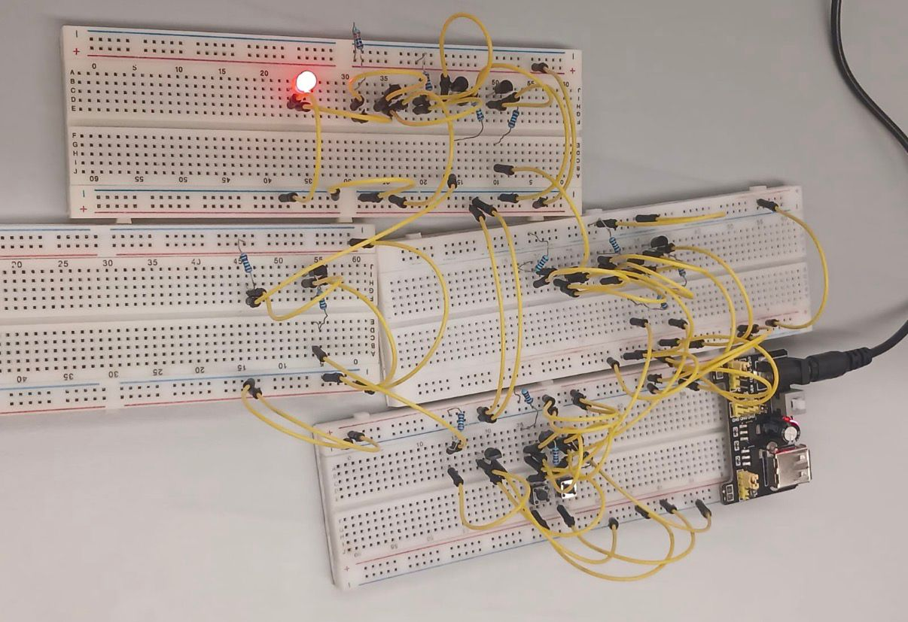
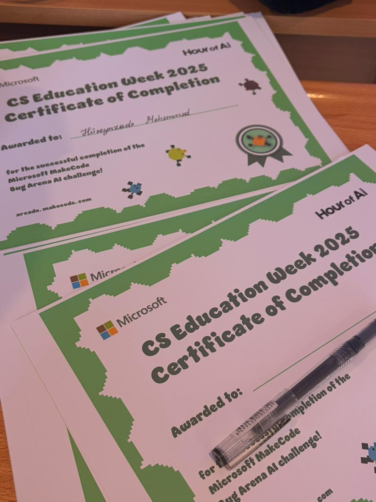

<!-- Projects Section -->
<section class="projects-page">
    <div class="container">
        <h1 class="page-title">My Projects</h1>
        <p class="page-subtitle">Here you can see the projects I have worked on</p>

        <div class="projects-grid">
            <!-- Project 1 (Required) -->
            <div class="project-card">
                <div class="project-image">
                    
                </div>
                <div class="project-content">
                    <h2>Project 1: Logic Gates</h2>
                    <p class="project-description">
                        This is our first project in Principles of Information Systems course. My team was Team 11. In this project, we constructed AND, OR, and NOT gates. For one extra point, we collabrated with Team 7 to construct NAND gate. These all were successful, but second extra point was not fully completed. 
                    </p>
                    <div class="project-tech">
                        <span class="tech-tag">AND</span>
                        <span class="tech-tag">OR</span>
                        <span class="tech-tag">XOR</span>
                        <span class="tech-tag">NOT</span>
                        <span class="tech-tag">XOR</span>
                        <span class="tech-tag">NAND</span>
                    </div>
                    <div class="project-links">
                        <a href="https://youtu.be/ufpy1ewgotY" target="_blank" rel="noopener noreferrer" class="project-link">
                            <i class="fab fa-youtube"></i> YouTube
                        </a>
                        <a href="https://youtu.be/V_9VFDevetw" class="project-link">
                            <i class="fas fa-external-link-alt"></i> Extra
                        </a>
                    </div>
                </div>
            </div>

            <!-- Project 2 (Optional - Hour of Code) -->
            <div class="project-card">
                <div class="project-image">
                    
                </div>
                <div class="project-content">
                    <h2>Project 2: Hour of Code</h2>
                    <p class="project-description">
                        This is our second project in Principles of Information Systems course. In this project, we introduced ADA University to school students first through a presentation, and then we taught them basics of programming using BugArena. It was a fun and interactive session where students learned to create simple programs by snapping together code blocks. This project was dedicated to AI and programming awareness week.
                    </p>
                    <div class="project-tech">
                        <span class="tech-tag">BugArena</span>
                        <span class="tech-tag">Programming Basics</span>
                    </div>
                    <div class="project-links">
                        <a href="https://youtu.be/CGDNI0anC40" class="project-link" target="_blank" rel="noopener noreferrer">
                             <i class="fab fa-youtube"></i> YouTube
                           
                        </a>

                    </div>
                </div>
            </div>

            <!-- Additional Project Example -->
            <div class="project-card">
                <div class="project-image">
                    
                </div>
                <div class="project-content">
                    <h2>Project 3: Personal Portfolio</h2>
                    <p class="project-description">
                        This is my only individual project for Principles of Information Systems course. In this project, I have created my personal portfolio website using HTML, CSS, and Jekyll. The website showcases my skills, projects, and experiences in a visually appealing manner. It serves as a platform to present my work to potential employers and collaborators. It is the most challenging project I have undertaken so far. I hope I can get full and extra points for it! 
                    </p>
                    <div class="project-tech">
                        <span class="tech-tag">VS Code</span>
                        <span class="tech-tag">Jekyll</span>
                        <span class="tech-tag">HTML</span>
                        <span class="tech-tag">CSS</span>
    
                    </div>
                    <div class="project-links">
                        <a href="https://github.com/alys27" class="project-link" target="_blank" rel="noopener noreferrer">
                            <i class="fab fa-github"></i> GitHub
                        </a>
                    </div>
                </div>
            </div>
        </div>
    </div>
</section>
